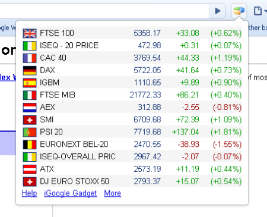
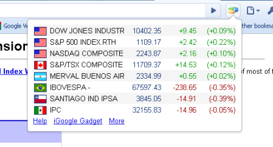
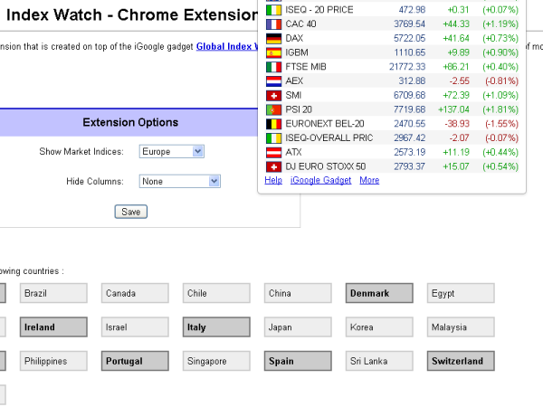

Note: This extension is for Google Chrome browsers only. If you have Internet Explorer or Firefox, you can try the toolbar button from here, which offers more or less same features as the Chrome extension.
Thank you for trying (or willing to try) out my Chrome Extension. Global Index Watch is an extension that is created on top of the iGoogle gadget Global Index Watch
which is an extremely simple module that tracks the indices of most of the markets in North America, Latin America, Europe, Asia and Australia.
If you have been using my iGoogle gadget for some time, it is obvious that it takes more time to open a browser to go through your gadgets. More importantly, the gadget you are interested in might load after all the other gadgets on the page finish loading. Google Chrome extension is a solution to that problem. You can install an extension and get the same features without having to load the entire iGoogle page. Download this and try it for yourself. I'm sure you'll like it.
Download
If you have not yet installed it, click here to get it from the Chrome extension gallery.Screenshots
Support for Global Index Watch
|
Global Index Watch currently tracks indices from most of
the markets in the following countries : Argentina
Australia
Austria
Belgium
Brazil
Canada
China
Denmark
Egypt
France
Germany
Hong Kong
India
Israel
Italy
Japan
Korea
Malaysia
Mexico
Netherlands
New Zealand
Norway
Portugal
Singapore
Spain
Sri Lanka
Switzerland
Taiwan
Turkey
UK
United States
|
Options in Global Index Watch
You can customize the extension by clicking on Options button for this extension. You can find a list of all extensions installed for your browser by going to Extensions page [ via Tools -> Extensions on your browser].- You can choose to view the indices from either American or Europe or Asian markets. Alternatively, you can choose All if you wish to see all the market indices.
- There is also an option to hide either Value Change or Percentage Change columns from the data view. If you wish to see all, select None for this option.
- A flag image is provided for every index, which represents the country where the exchange [this index belongs to] is located. This helps habituated users to quickly identify their entry from the list rather than searching for the Index name.

Quick Stock Watch
Like this module? Want to track more than just the indices? Try my other module Quick Stock Watch where you have the option of adding/deleting stocks you wish to track. You can also track Options, Mutual Funds, Forex rates, Commodities and much more. Charts are also available wherever possible. You will even be able to search for stocks that you don't remember the ticker symbols for. The module notifies you of any latest news related to stocks in your watch list. Last but not the least, its got a very simple Portfolio Tracker too.. So, why not give it a try?
Disclaimer: All the data displayed is provided by Yahoo!
Finance and I do not verify any of it. Please do not copy or use the code
for any other reason. The data could be real-time or might be delayed by few
minutes based on what you are monitoring. Refer to Yahoo! Finance for
more information.